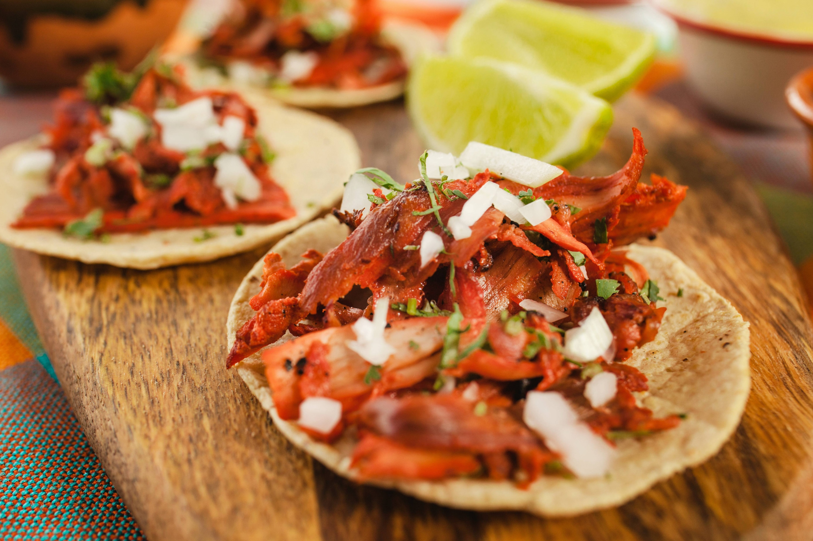
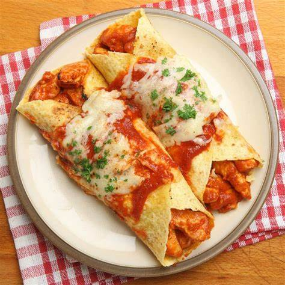

Comida tacos y enchiladas hasta mole y churros, aquí encontrarás recetas , historias y curiosidades sobre tus platos favoritos.

Los tacos al pastor son uno de los platillos más icónicos de México. Hechos con carne de cerdo marinada en achiote y cocinados en un trompo, se sirven en tortillas de maíz con cebolla, cilantro y piña.
- Ingredientes para las Enchiladas
- 1 kg de carne de cerdo (lomo o pierna, en rebanadas delgadas)
- 4 chiles guajillo (sin semillas y remojados en agua caliente)
- 2 chiles anchos (sin semillas y remojados en agua caliente)
- 1/4 de taza de vinagre blanco
- 1/4 de taza de jugo de piña (opcional)
- 2 dientes de ajo
- 1/4 de cebolla blanca
- 1 cucharadita de orégano seco
- 1 cucharadita de comino en polvo
- Recomendaciones
- Mantener precalentado el horno
- Limpiar los utensillos

Las enchiladas son tortillas de maíz rellenas de pollo, queso o frijoles, bañadas en una salsa de chile rojo o verde. Se acompañan a menudo con crema, cebolla y queso fresco.
Ingredientes para las Enchiladas
- 12 tortillas de maíz
- 2 pechugas de pollo cocidas y desmenuzadas
- 1 taza de queso rallado (queso fresco o queso Oaxaca)
- 1/2 taza de crema agria
- 1/4 de taza de cebolla blanca picada
- Aceite vegetal (para freír las tortillas)
Conéctate Conmigo
Sígueme en mis redes sociales para más recetas y actualizaciones: Instagram.